Nauta, Andrés Alzate
Editor de video, motion graphics y realización audiovisual · desde 2018 · El Carmen de Viboral, Colombia
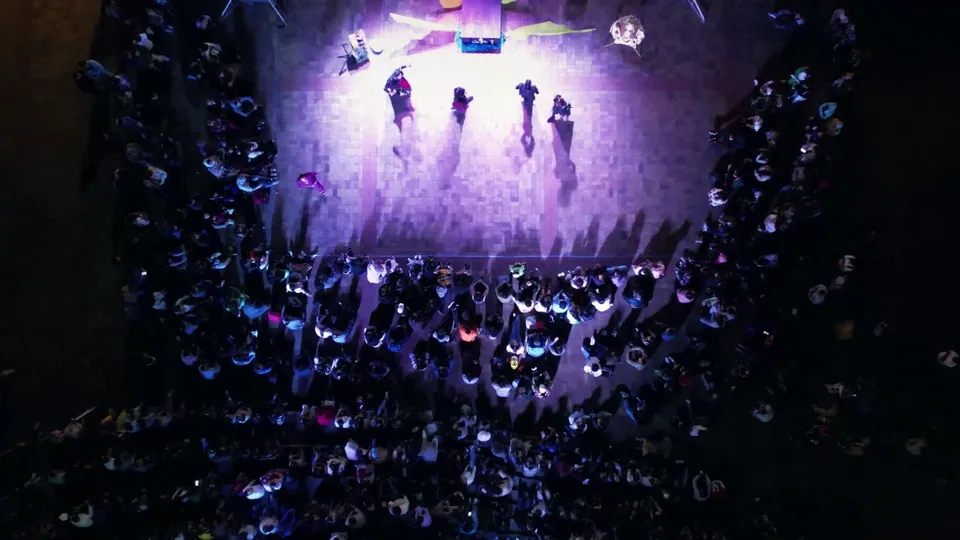
TV · DOCUMENTAL · PÓDCAST · REELS · CONCIERTOS
REEL · 2018–2026 · 0:55
Oficio
Edito, grabo y animo video desde 2018. Casi tres años de televisión semanal, documentales, conciertos, pódcast y reels que se ven: 101.671 reproducciones en un mes.
Trabajo
09 PROYECTOS · 2020–202601 · Pódcast · shorts02 · Reels · redes03 · Documental04 · Explainer · motion05 · Televisión06 · Concierto multicámara07 · Noticiero · dron08 · FPV · dron09 · Recital · 2 cámaras
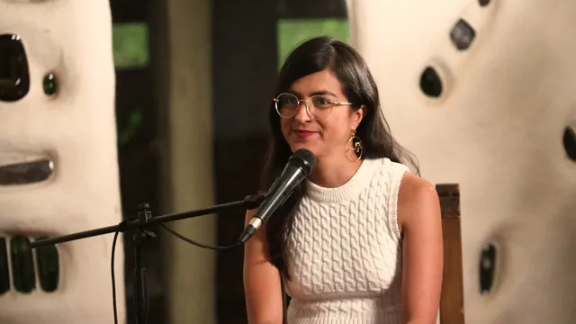
Aycito(2025–2026)el episodio más largo, a varias cámaras
1:11:57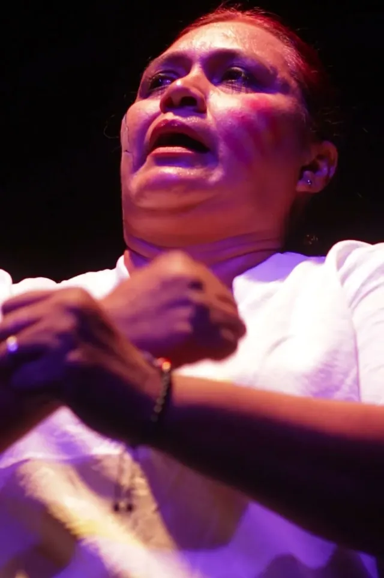
Festivales del Instituto(2025–2026)reproducciones de las 24 piezas publicadas ese mes en Instagram y YouTube (corte al 25 de septiembre)
101.671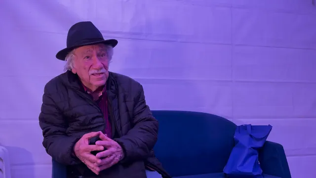
Fiesta del Libro 2025(2026)minutos de documental, publicado en el canal de YouTube del Instituto
19:47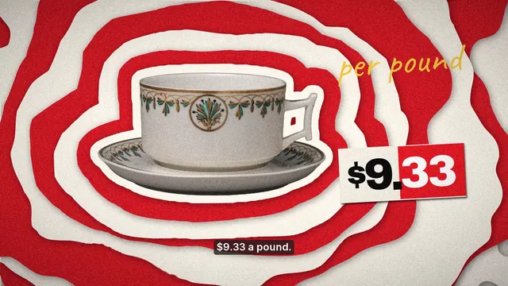
«The coffee chart» · finanzas con datosExplicativo de finanzas de 47 s, en inglés, en horizontal y en vertical
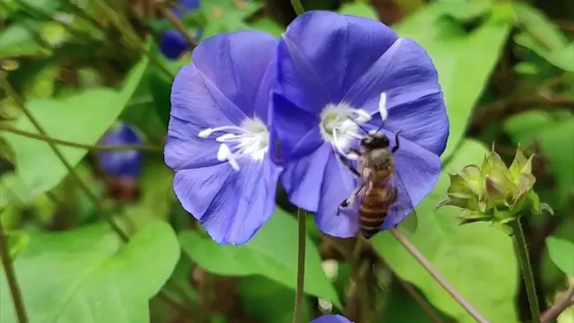
Abejas: la extinción(2020)minutos, emitido el 15 de junio de 2020
52:37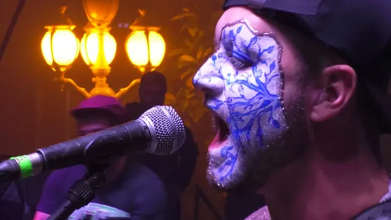
Aberden en concierto(2023)canciones editadas a varias cámaras
7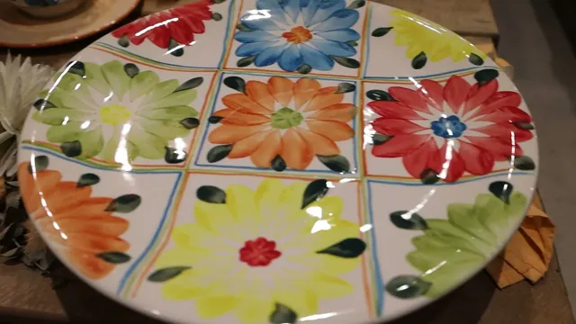
La loza de El Carmen(2022)minutos de apoyos de cerámica en 1080p
3:50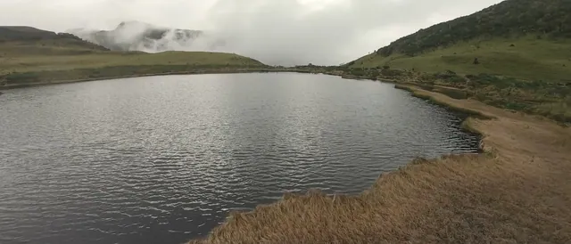
FPV y dron(2020–2024)Laguna Negra, páramo de Los Nevados, 2021
3.800 m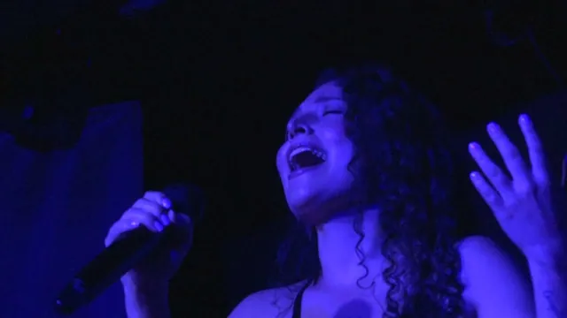
Caro Flórez · Recital(2024)de recital completo
1:13:10Más proyectos como estos
Casos 09
10Andanzas 20259:45 · minutos de video memoria2025 ↗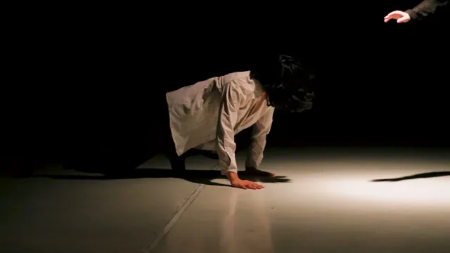
11Guardianes del Agua21:36 · minutos de documental en 4K2025-2026 ↗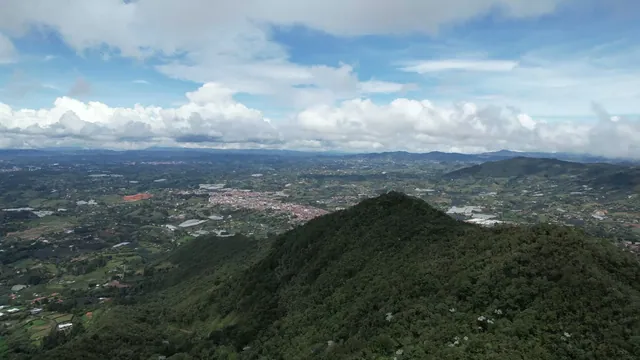
12La oveja negra · Caminando2:57 · «La oveja negra», 20202020 y 2022 ↗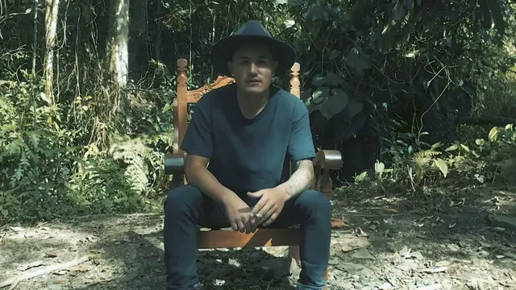
13Westfalia, Gin tonic, ProSourceIT y Canan0:59 · video corto de Westfalia, más el corporativo2022-2024 ↗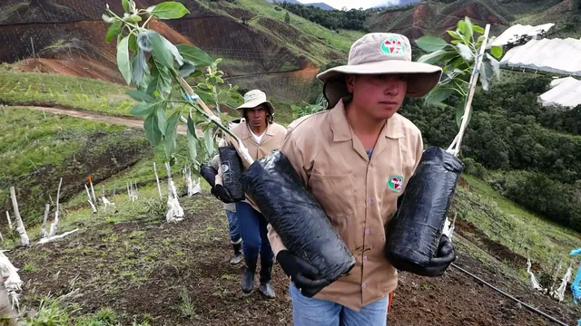
14Salida a Melcocho5:31 · minutos de apoyos y 4:36 de dron para el kit de prensa2024 ↗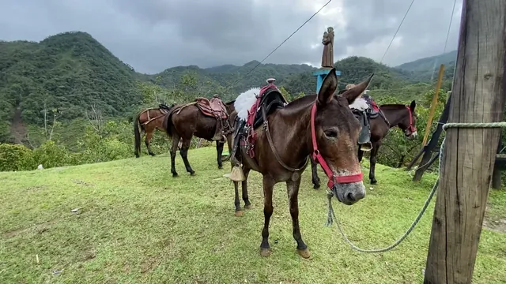
15FPV en movimiento1:26 · minutos del corte de stunt en FPV2021-2023 ↗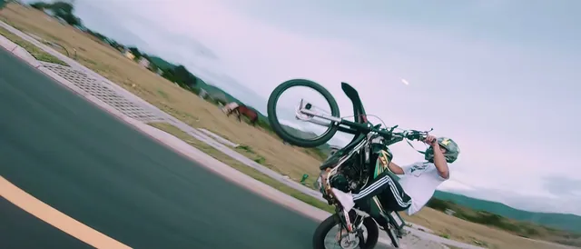
16Alcaldía #MásCerca20:06 · minutos, el noticiero del 11 de noviembre de 20222022 ↗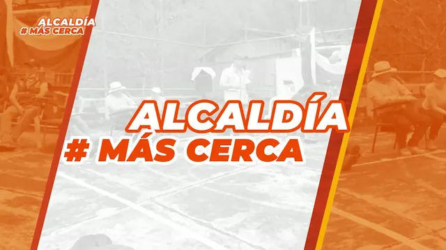
17Personería en territorio1:07 · minutos de dron para el kit de prensa, octubre de 20242024 ↗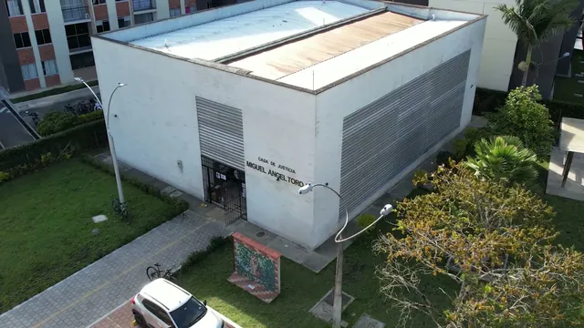
18Flores de Oriente3:15 · minutos de video institucional2023 ↗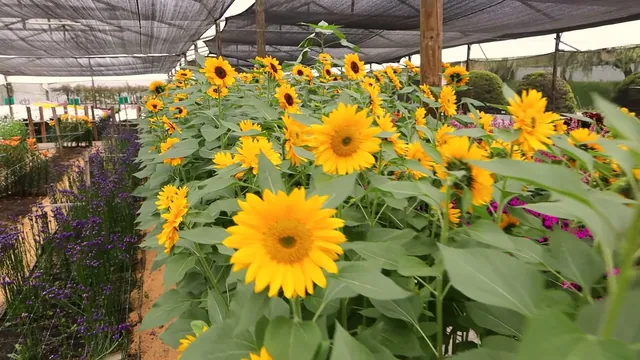
Formatos para canales 10
19«The town that paints its plates» · la loza de El CarmenExplicativo de historia de 53 s, en inglés, en horizontal y en verticalFORMATO ↗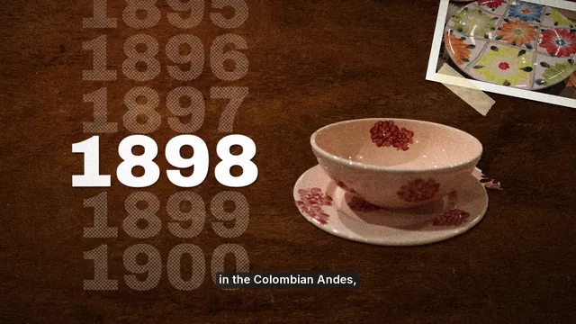
20Tomas imposibles · texto detrás del sujetoMotion editorial sobre mi vuelo FPV de 2022, con mi vozFORMATO ↗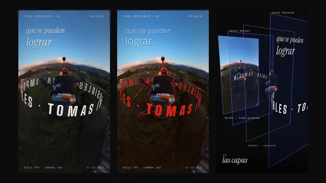
21Carrusel · cómo se hizo «Tomas imposibles»Siete láminas 4FORMATO ↗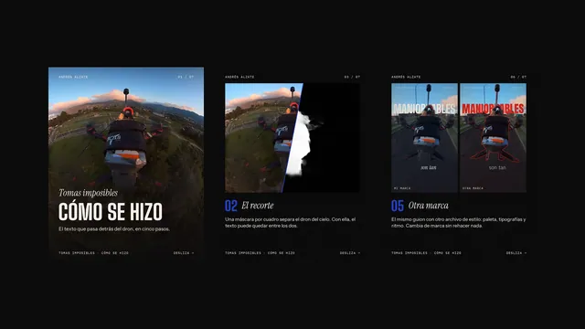
22Miniaturas para mis propios videosNueve miniaturas para videos que grabé y editéFORMATO ↗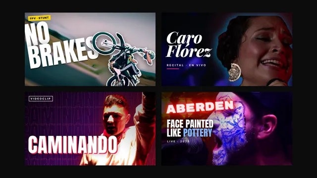
23Expedición al Nevado del RuizRuta animada sobre terreno 3D con mis tomasFORMATO ↗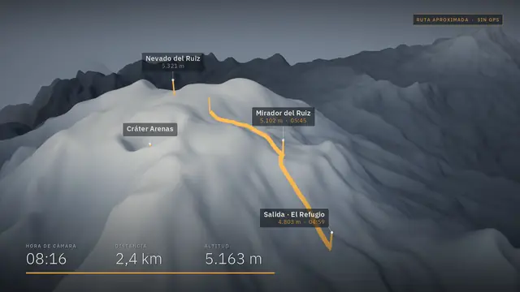
24Bonnie y Clyde: los últimos 127 díasDocumental de archivo de dominio públicoFORMATO ↗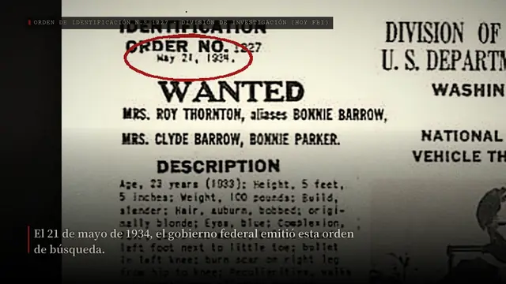
25Tulipomanía: la primera burbujaFormato sin rostro para canales de historia económicaFORMATO ↗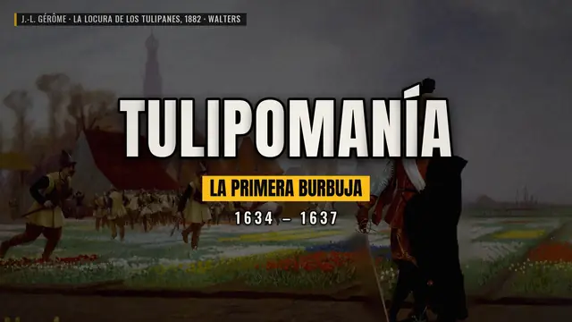
26La Adelita · motion musicalDiapasón y tablatura sincronizados con la músicaFORMATO ↗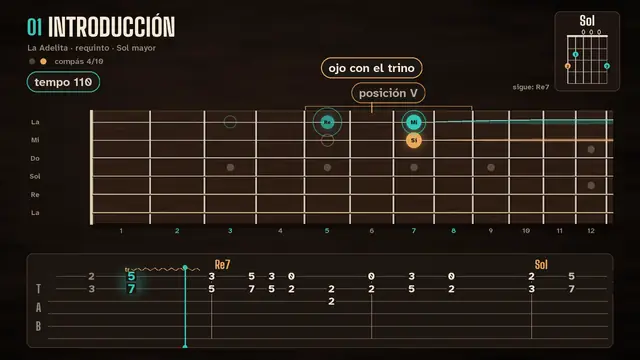
27Identidad para una pintoraLogo, piezas para imprenta, manual y mockups, para una artista ficticiaFORMATO ↗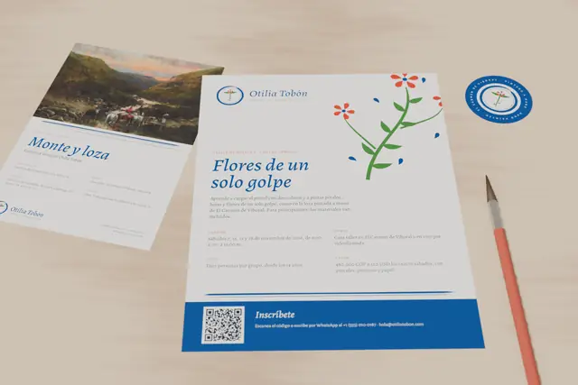
28Dos landings de muestraUna pintora y «Neblina Pádel Club»FORMATO ↗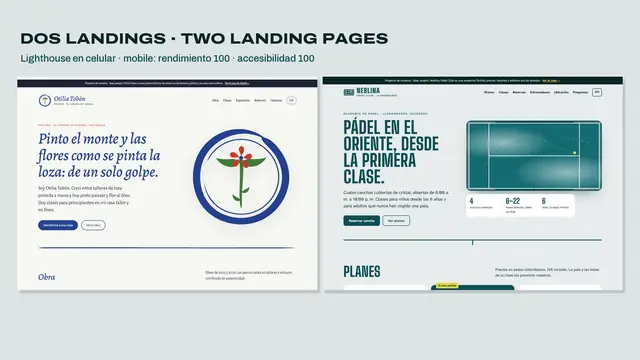
Lo que hago
Precios en USD, desde. El precio final queda fijo por escrito antes de empezar.
Edición de video largoVideos de 10 a 20 minutos para YouTube, charlas, pódcast y eventos.desde 150 USDShorts y reelsVerticales de 15 a 60 segundos, sueltos o en paquete mensual.desde 25 USDDocumental y archivoHistorias con fotos, documentos, titulares y mapas, con licencias verificadas.desde 250 USDMotion graphics, datos y mapasGráficos de datos con profundidad, texto detrás del sujeto, mapas y rótulos, en After Effects.desde 120 USDMiniaturasTres variantes por video para prueba A/B, legibles en el celular.desde 40 USDDiseño e identidadLogo, sistema gráfico y piezas listas para imprenta, en español y en inglés.desde 450 USDWebLandings estáticas, rápidas y bilingües, con inscripción o reserva por WhatsApp.desde 300 USD